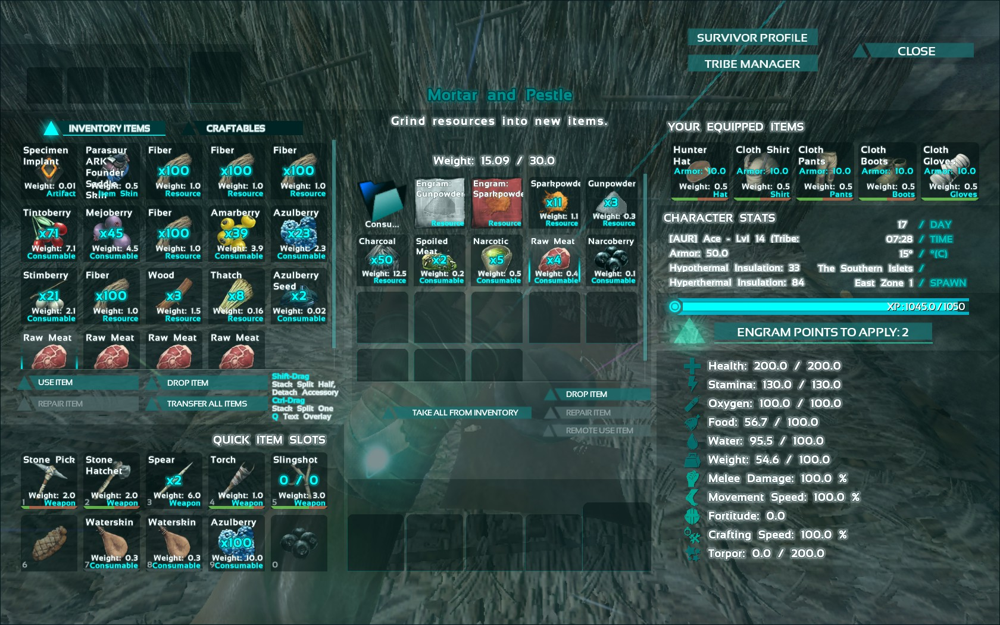
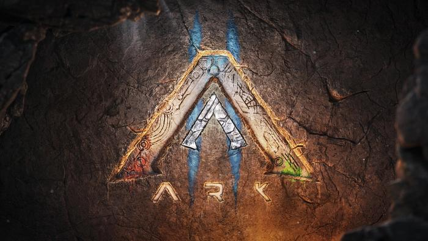

ARK: Survival Evolved
Nachfolger
Der offizielle Nachfolger von ARK: Survival Evolved ist ARK 2, das Ende 2024 erscheinen soll. ARK 2 wurde bei den Game Awards 2020 mit einem Trailer angekündigt, der den Schauspieler Vin Diesel als einen der Hauptcharaktere zeigt. ARK 2 soll eine neue Grafik-Engine, eine verbesserte KI und eine ausführlichere Story bieten. Bevor ARK 2 erscheint soll ein Remake des Originals herauskommen, mit dem Namen ARK: Survival Ascended. Sobald diese Version erscheint sollen alle alten Server abgeschaltet werden.
Ebenfalls hat ARK mehrere Spin-offs, wie ein Battle Royale oder auch eine Version, in der Spielende in die Rolle der Dinosaurier schlüpfen können.
Erweiterungen:
Aberration, Extinction, Genesis 1 und 2. Diese DLCs fügen eine neue Landschaft zum erkunden hinzu, sowie neue Kreaturen. Außerdem beinhalten sie eine neue oder erweiterte Storyline zum Hauptspiel.
Wo spielt ARK: Survival Evolved
Es spielt auf einer von sieben einsamen, von Dinosauriern bevölkerten Inseln (The Island, The Center, Ragnarok, Valguero, Crystal Isles, Lost Island und Fjordur)
Wann spielt ARK: Survival Evolved
ARK: Survival Evolved spielt in einer prähistorischen Zeit mit Dinosauriern, jedoch können Spielende auch Waffen und Technologien der Neuzeit herstellen.
Spielprinzip
Das Spielprinzip von Ark Survival Evolved ist, wie der Name schon sagt, das Überleben in einer Welt voller Dinosaurier und anderer Kreaturen. Dabei muss der Spieler verschiedene Aspekte wie Nahrung, Wasser, Temperatur, Gesundheit und Ausdauer beachten, die seinen Zustand beeinflussen. Der Spieler kann auch seine Fähigkeiten verbessern, indem er Erfahrungspunkte sammelt und neue Engramme lernt, die ihm erlauben, verschiedene Gegenstände, Waffen, Rüstungen, Strukturen und Technologien herzustellen. Der Spieler kann die Welt von Ark auf verschiedene Weisen erkunden, entweder zu Fuß oder auf dem Rücken eines gezähmten Tieres. Die Tiere haben unterschiedliche Eigenschaften, wie Geschwindigkeit, Stärke, Flugfähigkeit oder Schwimmfähigkeit, die dem Spieler Vorteile im Kampf oder bei der Ressourcengewinnung bieten. Der Spieler kann auch mit anderen Spielern interagieren, indem er einem Stamm beitritt oder einen eigenen gründet. Die Stämme können sich gegenseitig helfen oder bekämpfen, je nach Spielmodus und Einstellungen. Der Spieler kann auch an verschiedenen Events teilnehmen, die besondere Herausforderungen oder Belohnungen bieten.
Ziel des Spiels
Das Ziel des Spiels ist es, die Geheimnisse von Ark zu lüften, indem man die verschiedenen Höhlen erforscht, die Artefakte enthalten, die zum Beschwören der Boss-Kreaturen benötigt werden. Der Spieler kann auch versuchen, das Ark zu verlassen, indem er den Aufstieg vollzieht, was jedoch eine hohe Vorbereitung und ein hohes Risiko erfordert.
Ebenfalls kann alls Ziel des Spiels der Spaß und die Kreativität gesehen werden, da es sich bei ARK um ein Open World Spiel handelt.
Besonderheiten
ARK hat viele realistische Dinosaurier, welche gezähmt und gezüchtet werden können und besondere Fähigkeiten haben um das Spielen zu erleichtern. Ein weiterer Aspekt, der ARK besonders macht ist das ausführliche Crafting-System. Ebenfalls hat ARK: Survival Evolved sehr guten modding Support und es wurden bereits zahlreiche Modifikationen in das Hauptspiel eingebunden. Spieler sind sehr frei in der Gestaltung ihrer Basis und es werden ihnen generell in ihrer Kreativität kaum Grenzen gesetzt.

